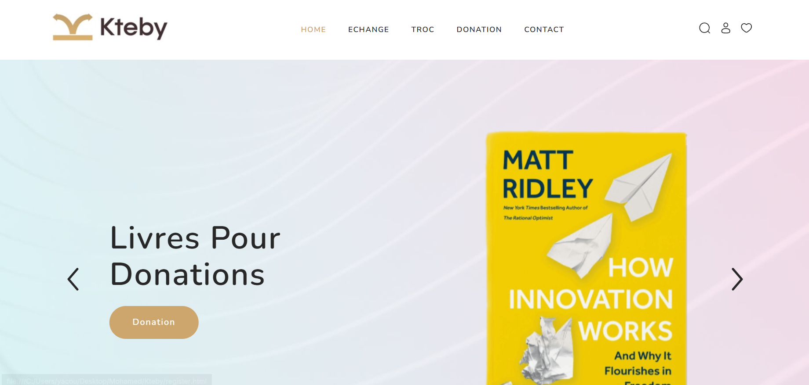
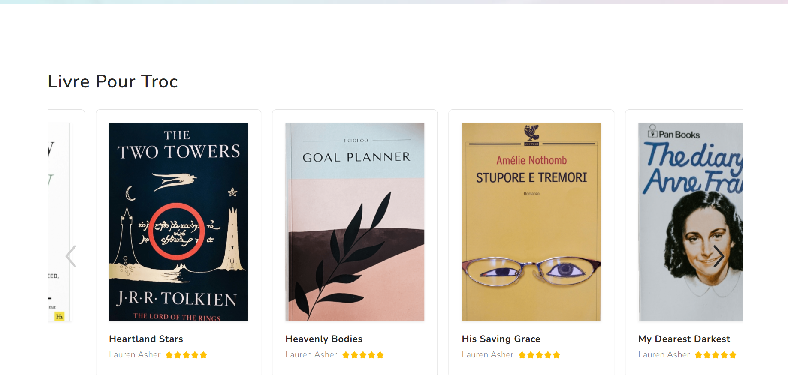
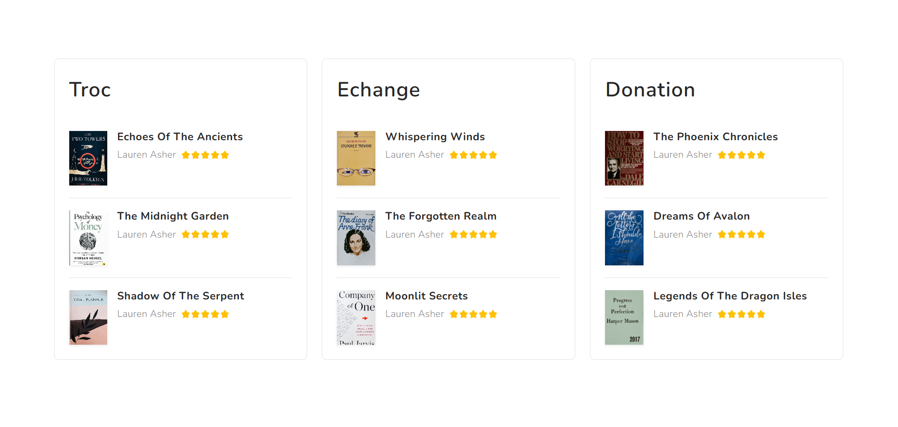

Kteby
Une plateforme dédiée à l'échange et à la donation de livres d'occasion L'application permet aux utilisateurs de trouver des livres d'occasion, de donner des livres dont ils n'ont plus besoin, et de partager des avis sur leurs lectures pour encourager une communauté active et informée de lecteurs.




← Back to Home